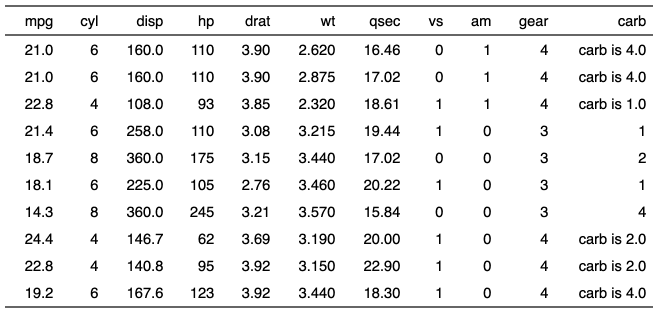

| compose {flextable} | R Documentation |
Modify flextable displayed values. Function is handling complex formatting as well as image insertion.
Function mk_par is another name for compose as
there is an unwanted conflict with package purrr.
compose(x, i = NULL, j = NULL, value, part = "body", use_dot = FALSE) mk_par(x, i = NULL, j = NULL, value, part = "body", use_dot = FALSE)
x |
a flextable object |
i |
rows selection |
j |
column selection |
value |
a call to function |
part |
partname of the table (one of 'all', 'body', 'header', 'footer') |
use_dot |
by default |

Other cells formatters:
colformat_char(),
colformat_datetime(),
colformat_date(),
colformat_double(),
colformat_image(),
colformat_int(),
colformat_lgl(),
colformat_num(),
set_formatter()
library(officer)
ft <- flextable(head( mtcars, n = 10))
ft <- compose(ft, j = "carb", i = ~ drat > 3.5,
value = as_paragraph("carb is ", as_chunk( sprintf("%.1f", carb)) )
)
ft <- autofit(ft)